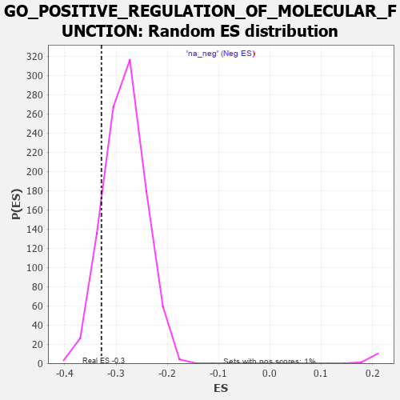

| | | Dataset | 7d |
| Phenotype | NoPhenotypeAvailable |
| Upregulated in class | na_neg |
| GeneSet | GO_POSITIVE_REGULATION_OF_MOLECULAR_FUNCTION |
| Enrichment Score (ES) | -0.3285137 |
| Normalized Enrichment Score (NES) | -1.1584886 |
| Nominal p-value | 0.1314459 |
| FDR q-value | 0.6850862 |
| FWER p-Value | 1.0 |
Table: GSEA Results Summary
 Fig 1: Enrichment plot: GO_POSITIVE_REGULATION_OF_MOLECULAR_FUNCTION
Fig 1: Enrichment plot: GO_POSITIVE_REGULATION_OF_MOLECULAR_FUNCTION
Profile of the Running ES Score & Positions of GeneSet Members on the Rank Ordered List
| PROBE | GENE SYMBOL | GENE_TITLE | RANK IN GENE LIST | RANK METRIC SCORE | RUNNING ES | CORE ENRICHMENT | | 1 | TGFB3 | | | 49 | 2.654 | 0.0076 | No |
| 2 | IRS1 | | | 98 | 1.659 | 0.0101 | No |
| 3 | ADCY8 | | | 124 | 1.418 | 0.0144 | No |
| 4 | AXIN1 | | | 166 | 1.159 | 0.0151 | No |
| 5 | SPDYA | | | 211 | 1.026 | 0.0148 | No |
| 6 | HGF | | | 276 | 0.870 | 0.0110 | No |
| 7 | DPH3 | | | 287 | 0.844 | 0.0142 | No |
| 8 | CLN5 | | | 346 | 0.751 | 0.0105 | No |
| 9 | GSK3A | | | 351 | 0.745 | 0.0139 | No |
| 10 | CLSPN | | | 379 | 0.719 | 0.0142 | No |
| 11 | BAX | | | 387 | 0.711 | 0.0171 | No |
| 12 | NBN | | | 405 | 0.696 | 0.0185 | No |
| 13 | OCRL | | | 408 | 0.691 | 0.0219 | No |
| 14 | CNOT6 | | | 462 | 0.655 | 0.0184 | No |
| 15 | WRN | | | 469 | 0.649 | 0.0211 | No |
| 16 | LRP1 | | | 470 | 0.648 | 0.0245 | No |
| 17 | CDC20 | | | 480 | 0.644 | 0.0268 | No |
| 18 | RFC2 | | | 488 | 0.635 | 0.0292 | No |
| 19 | LARP6 | | | 498 | 0.630 | 0.0314 | No |
| 20 | NMD3 | | | 513 | 0.625 | 0.0329 | No |
| 21 | RWDD1 | | | 526 | 0.621 | 0.0346 | No |
| 22 | HTRA2 | | | 527 | 0.621 | 0.0379 | No |
| 23 | PKN1 | | | 535 | 0.619 | 0.0402 | No |
| 24 | SRF | | | 542 | 0.615 | 0.0427 | No |
| 25 | CCNB1 | | | 581 | 0.601 | 0.0409 | No |
| 26 | DHX33 | | | 605 | 0.593 | 0.0410 | No |
| 27 | PARN | | | 660 | 0.572 | 0.0369 | No |
| 28 | RFC3 | | | 663 | 0.571 | 0.0397 | No |
| 29 | MRE11 | | | 693 | 0.560 | 0.0389 | No |
| 30 | XRCC6 | | | 694 | 0.560 | 0.0419 | No |
| 31 | CDC6 | | | 709 | 0.557 | 0.0430 | No |
| 32 | AHSA1 | | | 747 | 0.546 | 0.0410 | No |
| 33 | RFC4 | | | 815 | 0.528 | 0.0350 | No |
| 34 | TCEA1 | | | 821 | 0.526 | 0.0371 | No |
| 35 | AMFR | | | 856 | 0.518 | 0.0354 | No |
| 36 | HDAC8 | | | 881 | 0.510 | 0.0350 | No |
| 37 | HMGB2 | | | 892 | 0.507 | 0.0363 | No |
| 38 | HDAC5 | | | 900 | 0.506 | 0.0381 | No |
| 39 | STOX1 | | | 905 | 0.506 | 0.0403 | No |
| 40 | PTPA | | | 947 | 0.497 | 0.0375 | No |
| 41 | ADRM1 | | | 948 | 0.496 | 0.0401 | No |
| 42 | CCND2 | | | 949 | 0.496 | 0.0428 | No |
| 43 | DVL3 | | | 971 | 0.490 | 0.0426 | No |
| 44 | MEN1 | | | 1003 | 0.483 | 0.0411 | No |
| 45 | TELO2 | | | 1006 | 0.482 | 0.0434 | No |
| 46 | AKT1 | | | 1040 | 0.476 | 0.0416 | No |
| 47 | MEF2C | | | 1054 | 0.473 | 0.0424 | No |
| 48 | FZD10 | | | 1065 | 0.470 | 0.0436 | No |
| 49 | AIFM1 | | | 1072 | 0.469 | 0.0452 | No |
| 50 | DPM3 | | | 1097 | 0.464 | 0.0446 | No |
| 51 | SRC | | | 1128 | 0.459 | 0.0430 | No |
| 52 | KMT2A | | | 1130 | 0.458 | 0.0453 | No |
| 53 | CKS2 | | | 1165 | 0.452 | 0.0433 | No |
| 54 | CCNY | | | 1168 | 0.451 | 0.0454 | No |
| 55 | TFDP1 | | | 1180 | 0.450 | 0.0463 | No |
| 56 | STK36 | | | 1193 | 0.448 | 0.0471 | No |
| 57 | EIF3D | | | 1276 | 0.435 | 0.0387 | No |
| 58 | GIT2 | | | 1285 | 0.432 | 0.0399 | No |
| 59 | DKC1 | | | 1292 | 0.431 | 0.0414 | No |
| 60 | CCS | | | 1302 | 0.427 | 0.0425 | No |
| 61 | TBCD | | | 1338 | 0.422 | 0.0401 | No |
| 62 | EDF1 | | | 1369 | 0.415 | 0.0384 | No |
| 63 | DOCK7 | | | 1398 | 0.410 | 0.0369 | No |
| 64 | CARM1 | | | 1413 | 0.408 | 0.0372 | No |
| 65 | TIMP2 | | | 1478 | 0.394 | 0.0309 | No |
| 66 | SOS1 | | | 1547 | 0.384 | 0.0240 | No |
| 67 | FZD1 | | | 1574 | 0.379 | 0.0226 | No |
| 68 | ERP29 | | | 1589 | 0.376 | 0.0227 | No |
| 69 | NPRL3 | | | 1592 | 0.375 | 0.0245 | No |
| 70 | CCNK | | | 1596 | 0.374 | 0.0260 | No |
| 71 | TPX2 | | | 1708 | 0.355 | 0.0133 | No |
| 72 | ERCC2 | | | 1712 | 0.354 | 0.0148 | No |
| 73 | MRNIP | | | 1743 | 0.346 | 0.0127 | No |
| 74 | WAPL | | | 1758 | 0.344 | 0.0127 | No |
| 75 | LRP5 | | | 1769 | 0.342 | 0.0132 | No |
| 76 | ABR | | | 1812 | 0.335 | 0.0095 | No |
| 77 | FMR1 | | | 1816 | 0.334 | 0.0108 | No |
| 78 | MSH2 | | | 1819 | 0.334 | 0.0123 | No |
| 79 | TRIM5 | | | 1852 | 0.327 | 0.0099 | No |
| 80 | RNF25 | | | 1870 | 0.324 | 0.0094 | No |
| 81 | DCP1A | | | 1877 | 0.323 | 0.0103 | No |
| 82 | PAK3 | | | 1889 | 0.322 | 0.0105 | No |
| 83 | HACD3 | | | 1932 | 0.315 | 0.0067 | No |
| 84 | MOB1B | | | 1991 | 0.306 | 0.0007 | No |
| 85 | ROR1 | | | 1993 | 0.306 | 0.0022 | No |
| 86 | RAF1 | | | 2011 | 0.303 | 0.0016 | No |
| 87 | IRF4 | | | 2054 | 0.298 | -0.0024 | No |
| 88 | KCNC2 | | | 2075 | 0.295 | -0.0035 | No |
| 89 | CENPE | | | 2086 | 0.293 | -0.0032 | No |
| 90 | GMIP | | | 2108 | 0.290 | -0.0044 | No |
| 91 | PSME4 | | | 2143 | 0.285 | -0.0074 | No |
| 92 | DDR1 | | | 2176 | 0.280 | -0.0101 | No |
| 93 | NPRL2 | | | 2184 | 0.278 | -0.0096 | No |
| 94 | SYK | | | 2186 | 0.278 | -0.0082 | No |
| 95 | SHC2 | | | 2263 | 0.266 | -0.0168 | No |
| 96 | XRCC1 | | | 2287 | 0.262 | -0.0184 | No |
| 97 | REST | | | 2308 | 0.259 | -0.0197 | No |
| 98 | MED25 | | | 2320 | 0.257 | -0.0198 | No |
| 99 | DOCK8 | | | 2341 | 0.254 | -0.0210 | No |
| 100 | BCAS3 | | | 2352 | 0.253 | -0.0210 | No |
| 101 | MIF | | | 2357 | 0.252 | -0.0202 | No |
| 102 | HIPK2 | | | 2389 | 0.247 | -0.0230 | No |
| 103 | SAE1 | | | 2390 | 0.247 | -0.0217 | No |
| 104 | MET | | | 2430 | 0.240 | -0.0255 | No |
| 105 | KDM1A | | | 2447 | 0.237 | -0.0264 | No |
| 106 | PGAM5 | | | 2457 | 0.235 | -0.0263 | No |
| 107 | CDT1 | | | 2505 | 0.226 | -0.0313 | No |
| 108 | VAV3 | | | 2614 | 0.210 | -0.0444 | No |
| 109 | EIF3E | | | 2634 | 0.207 | -0.0458 | No |
| 110 | SASH1 | | | 2682 | 0.201 | -0.0509 | No |
| 111 | TAF12 | | | 2686 | 0.201 | -0.0502 | No |
| 112 | AGAP4 | | | 2705 | 0.198 | -0.0515 | No |
| 113 | PHB2 | | | 2712 | 0.197 | -0.0513 | No |
| 114 | FNTA | | | 2755 | 0.190 | -0.0558 | No |
| 115 | BUD31 | | | 2797 | 0.183 | -0.0602 | No |
| 116 | FER | | | 2803 | 0.183 | -0.0599 | No |
| 117 | SYAP1 | | | 2811 | 0.182 | -0.0598 | No |
| 118 | ASAP2 | | | 2815 | 0.181 | -0.0593 | No |
| 119 | EIF3C | | | 2832 | 0.179 | -0.0604 | No |
| 120 | RIC8A | | | 2833 | 0.179 | -0.0595 | No |
| 121 | PDCD5 | | | 2885 | 0.169 | -0.0653 | No |
| 122 | FGFR2 | | | 2895 | 0.167 | -0.0656 | No |
| 123 | BTK | | | 2958 | 0.156 | -0.0729 | No |
| 124 | MTCH1 | | | 2966 | 0.155 | -0.0730 | No |
| 125 | UBE2S | | | 2980 | 0.153 | -0.0739 | No |
| 126 | ISCU | | | 2989 | 0.151 | -0.0742 | No |
| 127 | AZIN2 | | | 2993 | 0.150 | -0.0738 | No |
| 128 | COX17 | | | 3019 | 0.147 | -0.0763 | No |
| 129 | WNT4 | | | 3023 | 0.146 | -0.0759 | No |
| 130 | MARK3 | | | 3031 | 0.145 | -0.0760 | No |
| 131 | CHP1 | | | 3089 | 0.138 | -0.0828 | No |
| 132 | TIGAR | | | 3091 | 0.138 | -0.0822 | No |
| 133 | ERN2 | | | 3160 | 0.129 | -0.0905 | No |
| 134 | GCH1 | | | 3166 | 0.127 | -0.0904 | No |
| 135 | PAX6 | | | 3170 | 0.127 | -0.0902 | No |
| 136 | AKTIP | | | 3178 | 0.125 | -0.0904 | No |
| 137 | FZR1 | | | 3205 | 0.122 | -0.0932 | No |
| 138 | ACAP1 | | | 3288 | 0.107 | -0.1034 | No |
| 139 | SMAD3 | | | 3303 | 0.105 | -0.1047 | No |
| 140 | TAB1 | | | 3351 | 0.097 | -0.1104 | No |
| 141 | GMFB | | | 3381 | 0.091 | -0.1137 | No |
| 142 | DDX3X | | | 3388 | 0.091 | -0.1140 | No |
| 143 | RFC5 | | | 3389 | 0.091 | -0.1135 | No |
| 144 | MED1 | | | 3405 | 0.089 | -0.1150 | No |
| 145 | KCTD7 | | | 3417 | 0.088 | -0.1160 | No |
| 146 | RFC1 | | | 3437 | 0.085 | -0.1180 | No |
| 147 | CDK5 | | | 3480 | 0.080 | -0.1231 | No |
| 148 | RGS8 | | | 3490 | 0.079 | -0.1239 | No |
| 149 | PIN1 | | | 3543 | 0.069 | -0.1304 | No |
| 150 | DERL1 | | | 3570 | 0.065 | -0.1334 | No |
| 151 | RSU1 | | | 3585 | 0.062 | -0.1350 | No |
| 152 | MAPK3 | | | 3589 | 0.062 | -0.1350 | No |
| 153 | DOK7 | | | 3603 | 0.059 | -0.1364 | No |
| 154 | RIC1 | | | 3627 | 0.055 | -0.1391 | No |
| 155 | FIS1 | | | 3654 | 0.051 | -0.1423 | No |
| 156 | SKP1 | | | 3663 | 0.049 | -0.1431 | No |
| 157 | DHX9 | | | 3693 | 0.044 | -0.1467 | No |
| 158 | NF1 | | | 3713 | 0.040 | -0.1490 | No |
| 159 | HSF1 | | | 3718 | 0.039 | -0.1493 | No |
| 160 | DAXX | | | 3722 | 0.038 | -0.1495 | No |
| 161 | SKI | | | 3762 | 0.032 | -0.1544 | No |
| 162 | DGKQ | | | 3856 | 0.020 | -0.1665 | No |
| 163 | NEK2 | | | 3871 | 0.016 | -0.1683 | No |
| 164 | DGKZ | | | 3879 | 0.015 | -0.1691 | No |
| 165 | NIPBL | | | 3900 | 0.010 | -0.1717 | No |
| 166 | SGSM1 | | | 3907 | 0.009 | -0.1725 | No |
| 167 | GCN1 | | | 3923 | 0.006 | -0.1744 | No |
| 168 | NRG3 | | | 3925 | 0.005 | -0.1745 | No |
| 169 | EVI5 | | | 3960 | 0.001 | -0.1790 | No |
| 170 | IGF1R | | | 3970 | -0.002 | -0.1801 | No |
| 171 | DDX58 | | | 3998 | -0.007 | -0.1837 | No |
| 172 | PARP1 | | | 4014 | -0.010 | -0.1856 | No |
| 173 | TAL1 | | | 4064 | -0.018 | -0.1919 | No |
| 174 | SFRP2 | | | 4065 | -0.018 | -0.1918 | No |
| 175 | CSF1 | | | 4074 | -0.019 | -0.1928 | No |
| 176 | WNT2 | | | 4084 | -0.021 | -0.1938 | No |
| 177 | PDP2 | | | 4098 | -0.023 | -0.1954 | No |
| 178 | TRAF1 | | | 4104 | -0.024 | -0.1960 | No |
| 179 | MTOR | | | 4114 | -0.025 | -0.1970 | No |
| 180 | ABL1 | | | 4125 | -0.027 | -0.1982 | No |
| 181 | PLCE1 | | | 4127 | -0.028 | -0.1982 | No |
| 182 | MSH6 | | | 4129 | -0.028 | -0.1982 | No |
| 183 | CRK | | | 4139 | -0.031 | -0.1992 | No |
| 184 | WNK3 | | | 4153 | -0.034 | -0.2007 | No |
| 185 | PDX1 | | | 4179 | -0.038 | -0.2038 | No |
| 186 | VAC14 | | | 4225 | -0.046 | -0.2095 | No |
| 187 | AGAP3 | | | 4251 | -0.050 | -0.2125 | No |
| 188 | RPTOR | | | 4252 | -0.050 | -0.2122 | No |
| 189 | ADAP1 | | | 4261 | -0.052 | -0.2130 | No |
| 190 | PSME3 | | | 4280 | -0.056 | -0.2151 | No |
| 191 | WNT11 | | | 4282 | -0.056 | -0.2149 | No |
| 192 | RGS3 | | | 4293 | -0.059 | -0.2159 | No |
| 193 | RAN | | | 4299 | -0.059 | -0.2162 | No |
| 194 | STAC | | | 4327 | -0.064 | -0.2194 | No |
| 195 | ADRB2 | | | 4352 | -0.068 | -0.2222 | No |
| 196 | ARF4 | | | 4383 | -0.073 | -0.2258 | No |
| 197 | MTMR9 | | | 4387 | -0.074 | -0.2258 | No |
| 198 | ERCC6 | | | 4464 | -0.087 | -0.2353 | No |
| 199 | LRRK2 | | | 4467 | -0.087 | -0.2351 | No |
| 200 | HIP1 | | | 4485 | -0.092 | -0.2369 | No |
| 201 | ILK | | | 4510 | -0.096 | -0.2395 | No |
| 202 | PINX1 | | | 4515 | -0.097 | -0.2395 | No |
| 203 | RIN2 | | | 4535 | -0.101 | -0.2415 | No |
| 204 | NTRK2 | | | 4543 | -0.104 | -0.2419 | No |
| 205 | RGS6 | | | 4559 | -0.107 | -0.2433 | No |
| 206 | RGS7 | | | 4565 | -0.108 | -0.2433 | No |
| 207 | PNKP | | | 4572 | -0.111 | -0.2436 | No |
| 208 | GATA3 | | | 4614 | -0.120 | -0.2483 | No |
| 209 | NMUR2 | | | 4646 | -0.127 | -0.2517 | No |
| 210 | FGFR3 | | | 4656 | -0.129 | -0.2522 | No |
| 211 | FBLN1 | | | 4748 | -0.149 | -0.2634 | No |
| 212 | PLCG1 | | | 4770 | -0.151 | -0.2653 | No |
| 213 | TERT | | | 4801 | -0.157 | -0.2685 | No |
| 214 | TNIK | | | 4804 | -0.158 | -0.2679 | No |
| 215 | PLCL2 | | | 4807 | -0.159 | -0.2673 | No |
| 216 | FBXW7 | | | 4816 | -0.161 | -0.2675 | No |
| 217 | TAOK3 | | | 4823 | -0.162 | -0.2674 | No |
| 218 | SGK1 | | | 4852 | -0.168 | -0.2702 | No |
| 219 | DLG1 | | | 4860 | -0.169 | -0.2702 | No |
| 220 | CLU | | | 4889 | -0.174 | -0.2730 | No |
| 221 | MARK2 | | | 4899 | -0.177 | -0.2732 | No |
| 222 | CASP1 | | | 4932 | -0.185 | -0.2765 | No |
| 223 | TBCK | | | 4937 | -0.186 | -0.2760 | No |
| 224 | FZD4 | | | 4940 | -0.186 | -0.2753 | No |
| 225 | EP300 | | | 4941 | -0.186 | -0.2743 | No |
| 226 | XRCC5 | | | 4946 | -0.187 | -0.2738 | No |
| 227 | ARAP1 | | | 4963 | -0.191 | -0.2749 | No |
| 228 | KLF4 | | | 5005 | -0.198 | -0.2792 | No |
| 229 | DAD1 | | | 5008 | -0.199 | -0.2785 | No |
| 230 | RIN3 | | | 5010 | -0.199 | -0.2775 | No |
| 231 | PDPK1 | | | 5043 | -0.207 | -0.2806 | No |
| 232 | DRD2 | | | 5088 | -0.221 | -0.2852 | No |
| 233 | ITSN1 | | | 5094 | -0.222 | -0.2847 | No |
| 234 | DDX11 | | | 5102 | -0.225 | -0.2845 | No |
| 235 | SMAP2 | | | 5105 | -0.226 | -0.2835 | No |
| 236 | MMP9 | | | 5108 | -0.227 | -0.2826 | No |
| 237 | FLCN | | | 5140 | -0.235 | -0.2854 | No |
| 238 | NEK10 | | | 5180 | -0.244 | -0.2892 | No |
| 239 | SMO | | | 5195 | -0.247 | -0.2898 | No |
| 240 | IDE | | | 5252 | -0.258 | -0.2958 | No |
| 241 | PTEN | | | 5262 | -0.261 | -0.2956 | No |
| 242 | CDK1 | | | 5264 | -0.262 | -0.2943 | No |
| 243 | EPHA4 | | | 5273 | -0.265 | -0.2939 | No |
| 244 | MAGI2 | | | 5295 | -0.269 | -0.2953 | No |
| 245 | RAD50 | | | 5314 | -0.276 | -0.2962 | No |
| 246 | EPHA1 | | | 5349 | -0.285 | -0.2991 | No |
| 247 | GRIN1 | | | 5381 | -0.291 | -0.3017 | No |
| 248 | FZD5 | | | 5386 | -0.292 | -0.3006 | No |
| 249 | DLG4 | | | 5388 | -0.293 | -0.2992 | No |
| 250 | PRDX3 | | | 5389 | -0.293 | -0.2977 | No |
| 251 | VDR | | | 5517 | -0.325 | -0.3126 | No |
| 252 | FGFR1 | | | 5543 | -0.332 | -0.3142 | No |
| 253 | NVL | | | 5572 | -0.338 | -0.3161 | No |
| 254 | SPHK1 | | | 5576 | -0.339 | -0.3146 | No |
| 255 | ROR2 | | | 5626 | -0.353 | -0.3192 | No |
| 256 | WNK1 | | | 5650 | -0.362 | -0.3203 | No |
| 257 | CASP8 | | | 5678 | -0.369 | -0.3219 | No |
| 258 | MADD | | | 5686 | -0.371 | -0.3209 | No |
| 259 | MTCL1 | | | 5697 | -0.374 | -0.3202 | No |
| 260 | CLPX | | | 5717 | -0.381 | -0.3207 | No |
| 261 | DAP | | | 5732 | -0.386 | -0.3205 | No |
| 262 | TLR2 | | | 5761 | -0.395 | -0.3220 | No |
| 263 | GRTP1 | | | 5780 | -0.400 | -0.3223 | No |
| 264 | TRPC6 | | | 5784 | -0.401 | -0.3206 | No |
| 265 | SNX13 | | | 5801 | -0.406 | -0.3205 | No |
| 266 | CCNT2 | | | 5804 | -0.406 | -0.3186 | No |
| 267 | RGS5 | | | 5831 | -0.414 | -0.3198 | No |
| 268 | VLDLR | | | 5898 | -0.434 | -0.3262 | Yes |
| 269 | DOCK1 | | | 5908 | -0.438 | -0.3251 | Yes |
| 270 | RAB4A | | | 5919 | -0.441 | -0.3240 | Yes |
| 271 | STK11 | | | 5922 | -0.443 | -0.3220 | Yes |
| 272 | AGFG1 | | | 5955 | -0.457 | -0.3237 | Yes |
| 273 | SGSM3 | | | 5957 | -0.457 | -0.3214 | Yes |
| 274 | ACTN2 | | | 5960 | -0.458 | -0.3193 | Yes |
| 275 | TTBK1 | | | 5969 | -0.460 | -0.3179 | Yes |
| 276 | STAC2 | | | 5987 | -0.466 | -0.3176 | Yes |
| 277 | RGS20 | | | 5995 | -0.471 | -0.3161 | Yes |
| 278 | JMY | | | 6023 | -0.479 | -0.3171 | Yes |
| 279 | ADD2 | | | 6046 | -0.487 | -0.3174 | Yes |
| 280 | FZD8 | | | 6051 | -0.490 | -0.3153 | Yes |
| 281 | PLK1 | | | 6082 | -0.500 | -0.3166 | Yes |
| 282 | DBNL | | | 6084 | -0.501 | -0.3141 | Yes |
| 283 | UBB | | | 6090 | -0.503 | -0.3121 | Yes |
| 284 | FLOT2 | | | 6092 | -0.504 | -0.3095 | Yes |
| 285 | PIFO | | | 6102 | -0.506 | -0.3080 | Yes |
| 286 | ATG13 | | | 6110 | -0.508 | -0.3062 | Yes |
| 287 | TNKS | | | 6138 | -0.516 | -0.3071 | Yes |
| 288 | STK4 | | | 6145 | -0.518 | -0.3051 | Yes |
| 289 | EGR1 | | | 6165 | -0.527 | -0.3048 | Yes |
| 290 | STIM1 | | | 6169 | -0.528 | -0.3024 | Yes |
| 291 | INSR | | | 6204 | -0.538 | -0.3040 | Yes |
| 292 | TPM1 | | | 6226 | -0.545 | -0.3039 | Yes |
| 293 | RGN | | | 6233 | -0.547 | -0.3018 | Yes |
| 294 | CDC42 | | | 6236 | -0.548 | -0.2991 | Yes |
| 295 | TFAP4 | | | 6254 | -0.556 | -0.2984 | Yes |
| 296 | STK39 | | | 6274 | -0.563 | -0.2979 | Yes |
| 297 | FLOT1 | | | 6276 | -0.564 | -0.2950 | Yes |
| 298 | TRAF7 | | | 6290 | -0.571 | -0.2937 | Yes |
| 299 | IFT57 | | | 6307 | -0.579 | -0.2928 | Yes |
| 300 | GALR2 | | | 6355 | -0.599 | -0.2958 | Yes |
| 301 | RALB | | | 6399 | -0.617 | -0.2981 | Yes |
| 302 | UBE2N | | | 6407 | -0.621 | -0.2958 | Yes |
| 303 | CSK | | | 6428 | -0.630 | -0.2950 | Yes |
| 304 | MALT1 | | | 6432 | -0.634 | -0.2921 | Yes |
| 305 | ARL1 | | | 6438 | -0.636 | -0.2894 | Yes |
| 306 | FANK1 | | | 6458 | -0.642 | -0.2884 | Yes |
| 307 | PLIN5 | | | 6524 | -0.672 | -0.2934 | Yes |
| 308 | ACE | | | 6526 | -0.674 | -0.2900 | Yes |
| 309 | DDR2 | | | 6542 | -0.681 | -0.2883 | Yes |
| 310 | ROBO1 | | | 6577 | -0.699 | -0.2891 | Yes |
| 311 | ARF1 | | | 6583 | -0.701 | -0.2860 | Yes |
| 312 | RNF41 | | | 6588 | -0.703 | -0.2828 | Yes |
| 313 | PAK1 | | | 6691 | -0.757 | -0.2922 | Yes |
| 314 | EGFR | | | 6708 | -0.765 | -0.2903 | Yes |
| 315 | GSK3B | | | 6719 | -0.768 | -0.2875 | Yes |
| 316 | NET1 | | | 6803 | -0.816 | -0.2941 | Yes |
| 317 | ADAM9 | | | 6808 | -0.819 | -0.2903 | Yes |
| 318 | NMUR1 | | | 6821 | -0.828 | -0.2875 | Yes |
| 319 | RGS17 | | | 6853 | -0.843 | -0.2871 | Yes |
| 320 | CSPG4 | | | 6918 | -0.878 | -0.2908 | Yes |
| 321 | LRP8 | | | 6931 | -0.889 | -0.2877 | Yes |
| 322 | DNM1L | | | 6963 | -0.913 | -0.2869 | Yes |
| 323 | CCR2 | | | 7003 | -0.939 | -0.2871 | Yes |
| 324 | RIPK4 | | | 7034 | -0.961 | -0.2859 | Yes |
| 325 | PIBF1 | | | 7049 | -0.966 | -0.2826 | Yes |
| 326 | GRM5 | | | 7053 | -0.969 | -0.2779 | Yes |
| 327 | RAB1A | | | 7096 | -0.993 | -0.2781 | Yes |
| 328 | RYK | | | 7102 | -1.000 | -0.2735 | Yes |
| 329 | CFTR | | | 7143 | -1.030 | -0.2733 | Yes |
| 330 | SPON1 | | | 7151 | -1.035 | -0.2687 | Yes |
| 331 | AR | | | 7169 | -1.046 | -0.2654 | Yes |
| 332 | CDK9 | | | 7266 | -1.138 | -0.2720 | Yes |
| 333 | CIB1 | | | 7280 | -1.152 | -0.2676 | Yes |
| 334 | ANK2 | | | 7298 | -1.170 | -0.2636 | Yes |
| 335 | GRN | | | 7319 | -1.194 | -0.2599 | Yes |
| 336 | NGEF | | | 7335 | -1.209 | -0.2554 | Yes |
| 337 | WDR35 | | | 7357 | -1.225 | -0.2517 | Yes |
| 338 | ARAP2 | | | 7397 | -1.261 | -0.2501 | Yes |
| 339 | GRM1 | | | 7404 | -1.272 | -0.2442 | Yes |
| 340 | UBC | | | 7410 | -1.274 | -0.2381 | Yes |
| 341 | NEK7 | | | 7415 | -1.285 | -0.2318 | Yes |
| 342 | CASP2 | | | 7442 | -1.322 | -0.2282 | Yes |
| 343 | CALM1 | | | 7567 | -1.499 | -0.2365 | Yes |
| 344 | TRAF4 | | | 7573 | -1.514 | -0.2291 | Yes |
| 345 | PKD1 | | | 7628 | -1.611 | -0.2277 | Yes |
| 346 | PDCD6 | | | 7630 | -1.615 | -0.2192 | Yes |
| 347 | TAF1 | | | 7643 | -1.633 | -0.2121 | Yes |
| 348 | ANK3 | | | 7690 | -1.740 | -0.2090 | Yes |
| 349 | ADCY1 | | | 7695 | -1.752 | -0.2002 | Yes |
| 350 | ADCY9 | | | 7704 | -1.783 | -0.1918 | Yes |
| 351 | BOK | | | 7715 | -1.817 | -0.1835 | Yes |
| 352 | PLPP3 | | | 7740 | -1.876 | -0.1767 | Yes |
| 353 | RNF31 | | | 7744 | -1.895 | -0.1670 | Yes |
| 354 | CASP3 | | | 7747 | -1.902 | -0.1572 | Yes |
| 355 | ST18 | | | 7780 | -2.007 | -0.1507 | Yes |
| 356 | TRAF6 | | | 7818 | -2.157 | -0.1441 | Yes |
| 357 | PKD2 | | | 7822 | -2.167 | -0.1330 | Yes |
| 358 | KCNC1 | | | 7835 | -2.249 | -0.1227 | Yes |
| 359 | GRM4 | | | 7847 | -2.393 | -0.1114 | Yes |
| 360 | TRAF2 | | | 7861 | -2.481 | -0.1000 | Yes |
| 361 | CALM3 | | | 7869 | -2.525 | -0.0875 | Yes |
| 362 | FYN | | | 7881 | -2.622 | -0.0750 | Yes |
| 363 | TCAF1 | | | 7901 | -2.803 | -0.0626 | Yes |
| 364 | PLCB1 | | | 7904 | -2.841 | -0.0478 | Yes |
| 365 | ARRB1 | | | 7935 | -3.377 | -0.0338 | Yes |
| 366 | TRAF5 | | | 7938 | -3.448 | -0.0158 | Yes |
| 367 | DAPK1 | | | 7950 | -3.767 | 0.0028 | Yes |
Table: GSEA details [plain text format]

Fig 2: GO_POSITIVE_REGULATION_OF_MOLECULAR_FUNCTION: Random ES distribution
Gene set null distribution of ES for GO_POSITIVE_REGULATION_OF_MOLECULAR_FUNCTION